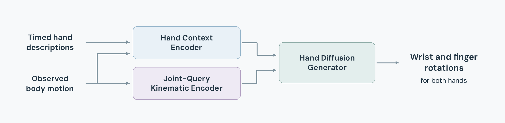
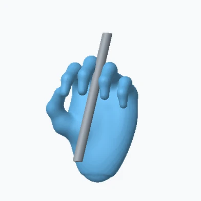
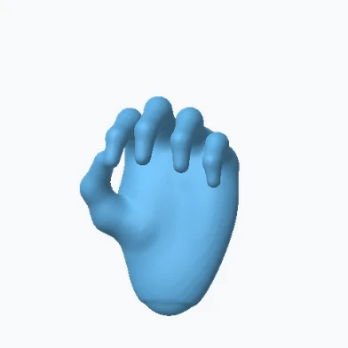

ContextHandsCompleting Hand Motion with Learned Context
and Joint-Specific Body Kinematics
Abstract
A similar arm movement can accompany very different hand actions. ContextHands completes wrist and finger motion from an observed body sequence and text describing what each hand does and when. A learned hand context connects the descriptions to articulation. Each hand joint also queries the moving body for the cues it needs. A diffusion model combines these signals to generate motion for both hands.
Method

Qualitative comparisons
The final clips will show the reference, ContextHands and five baselines at the same instant. In this placeholder, every method repeats one synthetic motion. Only the reference includes a prop.
Stirring a mug
Illustrative placeholder

Quantitative results
On 1,709 OakInk2 test clips from 157 recordings, the following are ContextHands’ measured results using 16 generations per input.
| Metric | ContextHands |
|---|---|
| Mean joint-position error | 30.711 mm |
| Best-of-16 joint-position error | 22.809 mm |
| Wrist rotation error | 16.93° |
The mean includes every generated sample. Best-of-16 uses the closest complete sample per input.
Limitations
ContextHands requires the full body sequence, including future frames, and descriptions assigned to hands and time intervals. It has no explicit object geometry or contact constraint, so a generated grip can miss the object.